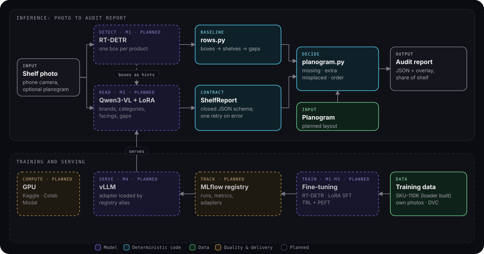
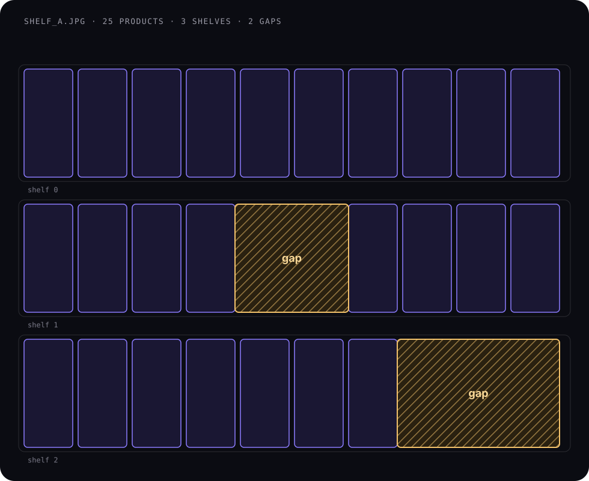

A detector counts
An RT-DETR model finds every product box on dense shelves, where counting a hundred similar packs is the job.
Case study · Computer vision · Retail execution
A supermarket shelf photo in; counts, empty slots, share of shelf and planogram compliance out, as structured data a retail system can act on without a person checking it.
Brands pay for shelf space and agree a layout with the retailer. Whether the shelf actually looks like that is checked by hand.
The agreed layout is the planogram: which shelf, how many facings, next to what. An empty slot is a lost sale. A product on the wrong shelf sells less.
Today compliance is mostly checked by field reps who visit stores, count by eye or with a phone app, and file a report. It is slow, expensive and only covers a sample of stores and days.
The questions never change: is anything out of stock, what is our share of shelf, and does the shelf match the plan?
Photos are cheap to take. Turning a photo into those answers reliably is the hard part: shelves are dense, packs look alike, and a wrong number in a compliance report costs money.
Detectors count but can't read. Vision-language models read but miscount. Business rules belong in code.
An RT-DETR model finds every product box on dense shelves, where counting a hundred similar packs is the job.
Qwen3-VL, fine-tuned with LoRA on labelled shelves, reads brands and categories and describes the layout, using the detector's boxes as hints.
The model must answer in one JSON schema, enforced by guided decoding and validated again; an invalid answer gets one retry with the error.
Shelf rows, gaps, share of shelf and compliance are plain, unit-tested Python. Explainable to a category manager, auditable by an engineer.
When a number is wrong, the design tells you which part was wrong: the boxes, the reading or the rule.

make site.The reasoning behind each lives in the repository's decision records, next to the code.
Models detect and read. Counting rules, gaps and compliance are deterministic, tested code.
ShelfReport is the model's JSON schema, the training target and the evaluation format at once. Changing it is a deliberate act.
A rule-based gap finder exists before any model is trained, so every model has something concrete to beat.
The core runs and is tested on a laptop and in CI. Training and serving sit behind optional extras.
More to train and serve, in exchange for reliable counts on dense shelves.
RT-DETR (Apache-2.0) instead of AGPL YOLO, so the code stays reusable by companies.
Brand and category, not exact pack size. SKU recognition needs a reference-image catalogue.
Share is measured in facings; physical shelf length needs camera calibration.
Open source end to end and portable to any cloud. Dashed items are on the roadmap.
| Layer | Choice | Why |
|---|---|---|
| Vision-language model | Qwen3-VL (8B; 4B for the demo) | Strong open VLM family that reads small text on packs; documented LoRA fine-tuning; fits one GPU. |
| Fine-tuning | TRL SFT + PEFT LoRA/QLoRA | Trains small adapters on a single 24-48 GB GPU; easy to store, version and swap. |
| Detector | RT-DETR via transformers | Counts dense shelves; Apache-2.0; same training stack as the VLM. |
| Output contract | pydantic ShelfReport + guided decoding | One schema for output, training and evaluation; invalid JSON never reaches a user. |
| Business logic | Plain Python | Deterministic, unit tested and explainable to non-technical stakeholders. |
| Data | SKU-110K, Label Studio, DVC | Public data for detection, own labels for brands, data versioned next to code. |
| Tracking | MLflow | Before/after numbers for every run; adapters in a model registry. |
| Serving | vLLM | High-throughput VLM serving, OpenAI-compatible API, LoRA adapters, guided JSON. |
| Demo | Gradio on Hugging Face Spaces | A live GPU demo for free or $9/month that embeds in a website. |
The open-source stack runs anywhere. These are the closest managed equivalents; pointing the client at a hosted model needs no code change.
| Need | Open source | Google Cloud | AWS | Azure |
|---|---|---|---|---|
| Images + labels | S3-compatible bucket + DVC | Cloud Storage | Amazon S3 | Blob Storage |
| Labelling | Label Studio | Label Studio on Cloud Run or GKE (managed labelling service retired in 2024) | SageMaker Ground Truth | Azure Machine Learning data labelling |
| GPU training | Kaggle · Colab · Modal | Vertex AI custom training | SageMaker AI training jobs (spot) | Azure Machine Learning GPU jobs |
| Tracking + registry | MLflow | Vertex AI Experiments + Model Registry | SageMaker AI managed MLflow | Azure Machine Learning (MLflow) |
| VLM serving | vLLM | vLLM on GKE or Vertex AI endpoints | vLLM on SageMaker AI endpoints or EKS | vLLM on AKS or managed online endpoints |
| Hosted model option | - | Gemini | Amazon Bedrock | Azure OpenAI (Microsoft Foundry) |
| App / API | Gradio, FastAPI in Docker | Cloud Run (GPU available) | ECS on Fargate, or ECS Express Mode | Container Apps (serverless GPU) |
| Kubernetes | Helm chart | GKE | EKS | AKS |
Every metric reported four ways: zero-shot VLM, fine-tuned VLM, detector + rules, and detector + fine-tuned VLM.
Baselines arrive with M1. What exists today: the scoring code for all four, unit tested against hand-built cases.
Groups boxes into shelves (robust to one tall pack spilling into the shelf below) and flags empty slots between products and at shelf ends. It is the baseline every model has to beat.
A product on the wrong shelf is reported as misplaced, not as one missing and one extra item, which is how a field auditor would describe it.
Switched the planned detector from YOLO (AGPL) to RT-DETR (Apache-2.0) before writing any training code.
Real output of the built code on the bundled example. No model is involved yet; these are the numbers every model will be measured against.

Facings per brand from the example planogram and report. Pantene and Garnier are short.
Example data · examples/
The top shelf has a misplaced product; the bottom shelf is missing two facings.
Scored by planogram.py
Share of facings per brand, the standard retail-audit measure, with the overall compliance score.
Example data · ShelfReport.share_of_shelf()
11,743 densely packed shelf images with product boxes, used to train and test the detector.
Goldman et al., CVPR 2019 · dataset
Baselines before fine-tuning, numbers before claims.
ShelfReport schema, shelf rows and gaps, planogram compliance, metrics, SKU-110K loader, VLM client with validation and retry, CI.
Gap finder on SKU-110K, RT-DETR fine-tuned for detection, zero-shot Qwen3-VL; first numbers in MLflow.
150-300 labelled shelf photos, synthetic planograms with controlled changes, training conversations, DVC.
LoRA SFT of Qwen3-VL; before/after on every metric; error analysis by density, lighting and angle.
Detector boxes as hints to the VLM, guided JSON decoding in vLLM, overlay images.
Gradio app on Hugging Face Spaces, vLLM endpoint on Modal, Docker and Helm.
Explore the build